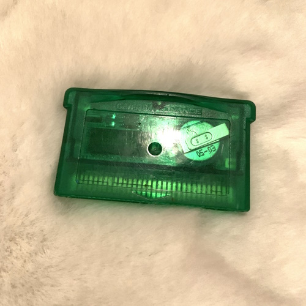
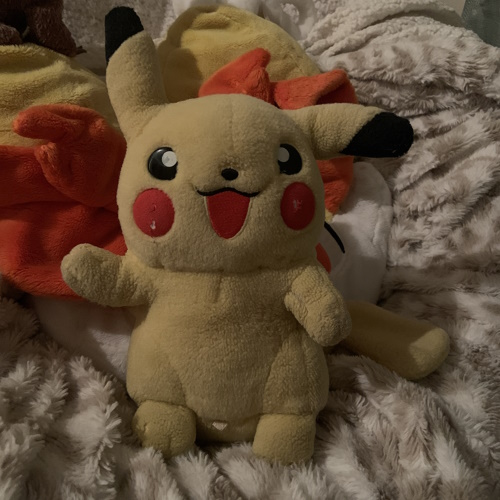
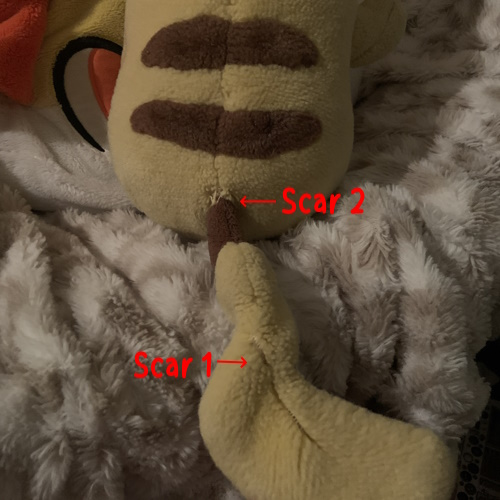

What does Pokemon mean to me? What does Pokemon mean to me?
What does Pokemon mean to me? What does Pokemon mean to me?it may seem dramatic to say, but this series really is enmeshed with the very core of my being. pokemon has been with me for as long as i can remember... literally! i know that i first started playing the games around 4 or 5 years old, and it's been my most consistent special interest ever since. it's more than just an interest to me though, it's a core component of my identity; it's been a safer second home for as long as i can remember. heck, pokemon's even the reason i started using the internet at all! i'll make a page on this in the future!
to me, pokemon is a lot of things... it's an escape, an identity, self expression, and so much more. it's always been there for me whenever other things weren't. whenever i felt alone, i never really had to be - because i could pick up my gameboy, or my DS, or run into pokepark on my wii. it formed the basis for almost all of my childhood connections (for better or for worse), and continues to influence how i interact and see things even as an adult.
as someone who's consistently been closer to animality than humanity their entire life, being able to connect to the world of pokemon when i was younger basically shaped my worldview more than the chaotic environment i was sheltered in. i'm forever grateful, and will be forever passionate about this series. my trainer class would absolutely be something like "PokeManiac".
|  |
|
The exact emerald cartridge in question... if you by some miracle ever see this, sorry! |
although i know i must have started playing the games around the time i was in late pre-k or starting kindergarten, i was definitely watching the anime even earlier than that. some of my earliest memories are of laying in a sleeping bag on the floor of my house and watching episode 6 of indigo league. i was a very sheltered kid, and i don't think i knew the games even existed until i'd seen the older kids in my neighborhood playing them. my very first game was pokemon emerald, a copy of which i "borrowed" from one of those neighbor kids... (and am still borrowing almost 20 years later.) i remember that he offered to let me borrow one of his copies of either ruby, sapphire, or emerald: and i picked emerald because not only was it green, but it was also missing it's label. unfortunately, this time of my life was very turbulent, so i don't remember any details beyond that. i wish so badly that i knew my first starter, my first team... or even that i felt personal attachment to hoenn as a region... but unfortunately, it's too complicated. it's nostalgic to me, but in a disconnected, frosted window type of way. despite all that, this led to my further interest into video games in general. i consider myself extremely lucky to have the one or two kids around me who actually liked pokemon at all. there was another kid i knew who took his copy of PMD: Blue Rescue Team over to my house, and i remember watching in complete and utter fascination and confusion. i'd never known there were pokemon spin-offs at all, considering i'd only recently learned of the existence of the games. this same kid showed me many pokemon and yu-gi-oh cards. we were both kids from rough households, so i'm glad to have shared these memories together.
unfortunately, most people around me were not so kind about my very overtly autistic fascination with the franchise. i was seen as a girl in my childhood, and since this was around the era of gen 3 where pokemon was "falling out of style" - i didn't have anyone to back me up from the very rampant bullying i faced as a result of being into it. all those nicer kids were all older than me, and not hanging around elementary school kids unless they had to. (i said they were nice, never that they liked me.) pokemon was a "boy's thing", and i was already enough of a "tomboy" - wasn't that enough without toting a pikachu plush onto the bus every single day? on top of that, i live in the southern US, and i can't count the amount of times i had kids come up to me and try to convince me that pokemon was "of the devil" and i was going to hell for liking it. i actually had a family personally take me to their church on one occasion as a result of this (though, in hindsight, they may have correctly clocked me as a lesbian and were trying to keep me away from their daughter, lol.) they had me walk through the toy aisles and ask them if my choices of toy were "evil" or not. for the record, i hold nothing against religion, but these sorts of things have a big impact on a developing mind! it served to do nothing for me except further ostracize me from both my peers and the religion that everyone wanted me to adhere to.
|  |  |
| My childhood pikachu plush still sleeps with me today! He's a 2004 Pokemon Advanced plush by Hasbro. It's the only time i'd ever found Pokemon merch in my small hometown, and I never found any there again (even today). | He suffered a lot of battle scars from my roughhousing and carrying him everywhere we went! My family had to tell me to stop toting him by his tail. His cheek scars are actually from my dog only a few years ago. |
 Positive connections amidst difficulty
Positive connections amidst difficultythe best things to come out of my love for the series besides the sense of identity it granted me were the connections i made through it. i met my childhood best friends through it amidst being bullied, connected with the few kind adults around me, and even made a rare family connection.
firstly, my first childhood best friend would would carry a blaziken plush onto the bus with them every day to school, just like i did with mine! we bonded quickly over that as the two "weirdos". they lived only a few houses down from me, so i went to their apartment almost every day from then on. we would play pokemon stadium and pokemon snap. i had never had a home console before... from this point forward, i'd walk to their apartment in the mornings to wait for the bus instead of waiting alone at home. we ran around pretending to be pokemon and animals and made many many memories. being friends with them is a large part of what taught me social skills and how to "be a kid" and i'm extremely sad to have lost contact with them... maybe someday we can talk again!
actually, one of my only irl friends i still have today is someone i also met in school. we were 2 of the few kids in our neighborhood that had the same sort of family relationship (raised by grandparents without parental figures around), and we bonded over that as well as being weird internet kids. she introduced me to youtube - i remember her coming over to my house and asking "hey, have you ever heard of fred? he got 1 million subscribers!". we played on the computer together, and ended up forming our own group of friends online, which i'll talk about on another page. we spent hours playing pokemon platinum in the underground, messing with action replay, watching marrilland and superskarmory lets plays... i stole her hacked arceus, and she held it over me for so long, lol. she sent me a level 100 rayquaza named "LilRayRay" and we're both sad not knowing what happened to him. to alice, if you're reading this: thank you for sticking by me even after i lost contact with you for so long, and still being my friend today. you're the best, and i'm sorry for what a little fucking shit i was to you as a child...
explaining the last point in detail would get far too complicated... tl;dr, due to my family situation said before, i had a difficult time bonding with my absent father's side of the family due to them feeling like strangers. however, an uncle from that side reached out to me right before he fled the south to escape homophobia. i didn't even know his name at the time, let alone where he was leaving or for why - but he must have seen the explicit homophobia and ableism i was facing and wanted to make a connection with me. he gave me his childhood gameboy color and copy of pokemon red, with a loving note that i wish i could remember. it's one of the most cherished items i own, and i took it to many sleepovers trying to impress the kids around me. i try to live up to this act of kindness as much as i can.